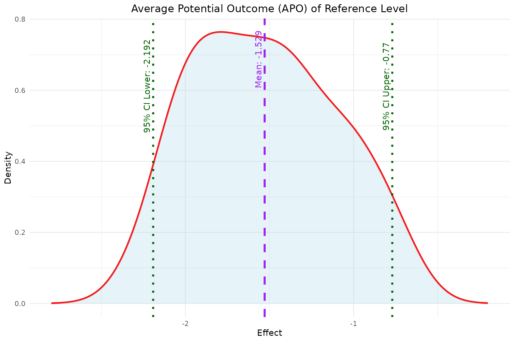
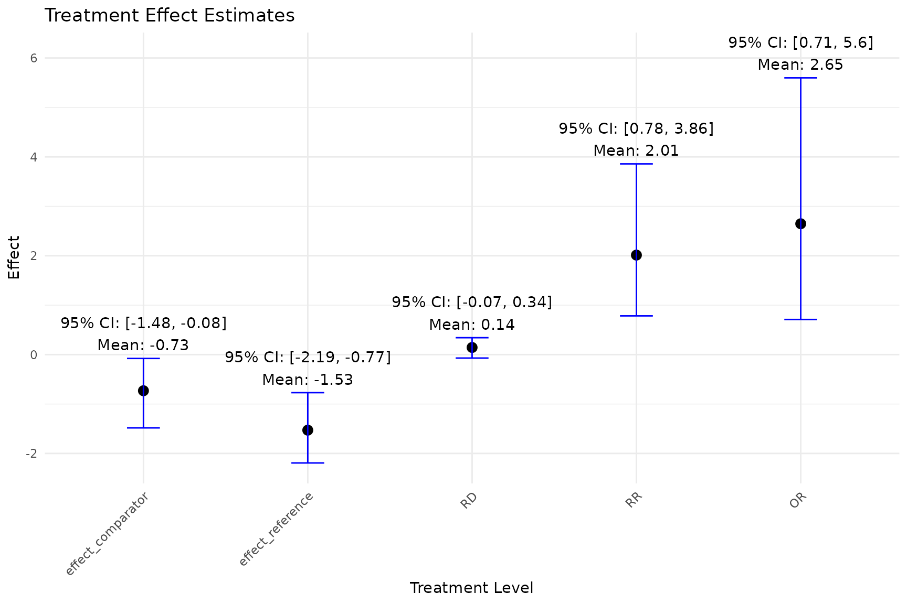

`bayesmsm` for longitudinal data without right-censoring
Xiao Yan, Kuan Liu
Source:vignettes/bayesmsm-nocensoring.Rmd
bayesmsm-nocensoring.RmdIntroduction
-
The
bayesmsmpackage enables easy implementation of the Bayesian marginal structural models (BMSMs) for longitudinal data. The methodology of BMSMs can be divided into 2 estimation steps:- Step 1. Bayesian treatment effect weight estimation
- Step 2. Bayesian non-parametric bootstrap to maximize the utility function with respect to the causal effect
For Step 1, we estimate treatment weights using posterior samples of the and via fitting a series of logistic regressions in a Bayesian framework. The package is able to handle longitudinal data without and with right-censoring. For Step 2, is estimated via non-parametric Bayesian bootstrap with sampling weights.
-
The main functions in this package include:
-
bayesweight: Calculates Bayesian weights for subject-specific treatment effects. -
bayesweight_cen: Calculates Bayesian weights for subject-specific treatment effects with right-censored data. -
bayesmsm: Estimates marginal structural models using the calculated Bayesian weights. -
plot_ATE: Plots the estimated Average Treatment Effect (ATE). -
plot_APO: Plots the estimated Average Potential Outcome (APO). -
plot_est_box: Plots the distribution of estimated treatment effects. -
summary_bayesmsm: Summarizes the model results frombayesmsm.
-
-
Installation
- To install the bayesmsm package, you can use the
devtoolspackage to install it directly from GitHub.
- To install the bayesmsm package, you can use the
Simulated observational data with a time-dependent treatment
- The simulated dataset (continuous outcome)
- 1000 patients and 3 visits (2 of which patients were assigned a treatment)
- y, an end-of-study continuous outcome
- z, a binary treatment
- w1 and w2 are two baseline covariates (one continuous and one binary, mimicking age and sex)
- L1 and L2 are two time-dependent covariates (also one continuous and one binary)
- no missing data
# example simulated causal data;
testdata <- read.csv(system.file("extdata", "continuous_outcome_data.csv", package = "bayesmsm"))
# look at the data;
head(testdata)
#> w1 w2 L1_1 L2_1 a_1 L1_2 L2_2 a_2 y
#> 1 0 9.592429 0 -0.4156794 0 1 -0.1232054 0 0.9773712
#> 2 1 8.025206 1 0.3271899 0 0 1.0475552 0 0.5193338
#> 3 0 16.107140 0 -0.3805178 0 0 0.4515578 1 -0.8161817
#> 4 1 15.004245 0 1.3792701 0 1 0.2351548 0 3.6066315
#> 5 1 5.963334 0 0.2437692 0 0 -1.7327070 0 -0.1648256
#> 6 0 11.619410 0 -0.4990742 0 1 1.8224460 0 3.5454856- Frequency Counts by Treatment Combinations
# frequency counts by treatment combinations;
table(testdata$a_1, testdata$a_2)
#>
#> 0 1
#> 0 520 201
#> 1 111 168- Suppose the causal parameter of interest is the average treatment effect between always treated and never treated,
Bayesian treatment effect weight estimation using
bayesweight
- The following code calls the function
bayesweightto run JAGS and calculate the weights.- Non-parallel computing requires that
n.chains = 1. Parallel MCMC requires at least 2 chains because computing is running on 1 core per chain, and we recommend using at most 2 chains less than the number of available cores on your computer. - Running this function automatically saves a JAGS model file in the working directory, which the user can check to review the model specifications.
- Non-parallel computing requires that
- Parameters Description:
-
trtmodel.list: A list of formulas corresponding to each time point with the time-specific treatment variable on the left hand side and pre-treatment covariates to be balanced on the right hand side. Interactions and functions of covariates are allowed. -
data: The dataset containing all the variables specified in trtmodel.list. -
n.chains: Number of MCMC chains to run. For non-parallel execution, this should be set to 1. For parallel execution, it requires at least 2 chains. -
n.iter: Total number of iterations for each chain (including burn-in). -
n.burnin: Number of iterations to discard at the beginning of the simulation (burn-in). -
n.thin: Thinning rate for the MCMC sampler. -
seed: Seed to ensure reproducibility. -
parallel: Logical flag indicating whether to run the MCMC chains in parallel. Default is TRUE.
-
weights <- bayesweight(trtmodel.list = list(a_1 ~ w1 + w2 + L1_1 + L2_1,
a_2 ~ w1 + w2 + L1_1 + L2_1 + L1_2 + L2_2 + a_1),
data = testdata,
n.chains = 1,
n.iter = 200,
n.burnin = 100,
n.thin = 1,
seed = 890123,
parallel = FALSE)
#> Compiling model graph
#> Resolving undeclared variables
#> Allocating nodes
#> Graph information:
#> Observed stochastic nodes: 4000
#> Unobserved stochastic nodes: 16
#> Total graph size: 21040
#>
#> Initializing model
summary(weights)
#> Length Class Mode
#> weights 1000 -none- numeric
#> model_string 1 -none- character- It returns a list containing:
-
weights: The calculated weights for subject-specific treatment effects, computed by taking the average of the weights across all MCMC iterations. -
model_string: A character of the JAGS model based on input of the argument trtmodel.list.
-
- We can print and view the JAGS model stored in
model_stringfrom the above function output:
cat(weights$model_string)
#> model{
#> #N = nobs
#> for(i in 1:N){
#>
#> # visit 1;
#> # marginal treatment assignment model, visit 1;
#> a_1s[i] ~ dbern(pa_1s[i])
#> pa_1s[i] <- ilogit(bs10)
#>
#> # conditional treatment assignment model, visit 1;
#> a_1[i] ~ dbern(pa_1[i])
#> pa_1[i] <- ilogit(b10 + b11*w1[i] + b12*w2[i] + b13*L1_1[i] + b14*L2_1[i])
#>
#> # visit 2;
#> # marginal treatment assignment model, visit 2;
#> a_2s[i] ~ dbern(pa_2s[i])
#> pa_2s[i] <- ilogit(bs20 + bs21*a_1s[i])
#>
#> # conditional treatment assignment model, visit 2;
#> a_2[i] ~ dbern(pa_2[i])
#> pa_2[i] <- ilogit(b20 + b21*w1[i] + b22*w2[i] + b23*L1_1[i] + b24*L2_1[i] + b25*L1_2[i] + b26*L2_2[i] + b27*a_1[i])
#>
#> # export quantity in full posterior specification;
#> w[i] <- (pa_1s[i]*pa_2s[i])/(pa_1[i]*pa_2[i])
#> }
#>
#> #prior;
#> bs10~dnorm(0,.01)
#> b10~dnorm(0,.01)
#> b11~dnorm(0,.01)
#> b12~dnorm(0,.01)
#> b13~dnorm(0,.01)
#> b14~dnorm(0,.01)
#> bs20~dnorm(0,.01)
#> bs21~dnorm(0,.01)
#> b20~dnorm(0,.01)
#> b21~dnorm(0,.01)
#> b22~dnorm(0,.01)
#> b23~dnorm(0,.01)
#> b24~dnorm(0,.01)
#> b25~dnorm(0,.01)
#> b26~dnorm(0,.01)
#> b27~dnorm(0,.01)
#> }Bayesian non-parametric bootstrap to maximize the utility function
with respect to the causal effect using bayesmsm
The function bayesmsm estimates causal effect of
time-varying treatments. It uses subject-specific treatment assignment
weights weights calculated using bayesweight, and
performs Bayesian non-parametric bootstrap to estimate the causal
parameters.
- Parameters Description:
-
ymodel: A formula representing the outcome model, which can include interactions and functions of covariates. -
nvisit: Specifies the number of visits or time points considered in the model. -
reference: The baseline or reference intervention across all visits, typically represented by a vector of zeros indicating no treatment (default is a vector of all zeros). -
comparator: The comparison intervention across all visits, typically represented by a vector of ones indicating full treatment (default is a vector of all ones). -
treatment_effect_type: A character string specifying the type of treatment effect to estimate. Options are “sq” for sequential treatment effects, which estimates effects for specific treatment sequences across visits, and “cum” for cumulative treatment effects, which assumes a single cumulative treatment variable representing the total exposure. The default is “sq”. -
family: Specifies the outcome distribution family; use “gaussian” for continuous outcomes or “binomial” for binary outcomes (default is “gaussian”). -
data: The dataset containing all variables required for the model. -
wmean: A vector of treatment assignment weights. Default is a vector of ones, implying equal weighting. -
nboot: The number of bootstrap iterations to perform for estimating the uncertainty around the causal estimates. -
optim_method: The optimization method used to find the best parameters in the model (default is ‘BFGS’). -
seed: A seed value to ensure reproducibility of results. -
parallel: A logical flag indicating whether to perform computations in parallel (default is TRUE). -
ncore: The number of cores to use for parallel computation (default is 4).
-
model <- bayesmsm(ymodel = y ~ a_1+a_2,
nvisit = 2,
reference = c(rep(0,2)),
comparator = c(rep(1,2)),
family = "gaussian",
data = testdata,
wmean = weights$weights,
nboot = 50,
optim_method = "BFGS",
parallel = FALSE,
seed = 890123,
ncore = 2)
str(model)
#> List of 6
#> $ RD_mean : num -3.25
#> $ RD_sd : num 0
#> $ RD_quantile: Named num [1:2] -3.25 -3.25
#> ..- attr(*, "names")= chr [1:2] "2.5%" "97.5%"
#> $ bootdata :'data.frame': 50 obs. of 3 variables:
#> ..$ effect_reference : num [1:50] 2.36 2.36 2.36 2.36 2.36 ...
#> ..$ effect_comparator: num [1:50] -0.891 -0.891 -0.891 -0.891 -0.891 ...
#> ..$ RD : num [1:50] -3.25 -3.25 -3.25 -3.25 -3.25 ...
#> $ reference : num [1:2] 0 0
#> $ comparator : num [1:2] 1 1- It returns a model object which contains:
-
mean,sd,quantile: the mean, standard deviation and 95% credible interval of the estimated causal effect (ATE). From the above results, the mean of ATE is approximately -3.161, which indicates that the expected outcome for always treated patients is, on average, 3.161 units less than that for never treated patients. -
bootdata: a data frame containing the bootstrap samples for the reference effect, comparator effect, and average treatment effect (ATE). -
reference,comparator: the reference level and comparator level the user chooses to compare. Here the reference level is never treated (0,0), and the comparator level is always treated (1,1).
-
- Summary function to generate result table from
bayesmsm- The
summary_bayesmsmfunction automatically generates a summary table of the model output from the functionbayesmsm.
- The
summary_bayesmsm(model)
#> mean sd 2.5% 97.5%
#> Reference 2.3587741 0 2.3587741 2.3587741
#> Comparator -0.8912219 0 -0.8912219 -0.8912219
#> RD -3.2499959 0 -3.2499959 -3.2499959Visualization functions: plot_ATE,
plot_APO, plot_est_box
The bayesmsm package also provides several other
functions for visualizing the above results: plot_ATE,
plot_APO, and plot_est_box. These functions
help the user better interpret the estimated causal effects.
- Plotting the Average Treatment Effect (ATE)
- The
plot_ATEfunction generates a plot of the estimated ATE with its 95% credible interval.
- The
plot_ATE(model)
- Plotting the Average Potential Outcome (APO)
- Similarly, the
plot_APOfunction plots the estimated APO for both the reference and comparator level effects.
- Similarly, the
plot_APO(model, "effect_reference")
plot_APO(model, "effect_comparator")- Plotting the Distribution of Estimated Treatment Effects
- The
plot_est_boxfunction generates an error bar plot of the estimated treatment effects (APO and ATE) from the bootstrap samples.
- The
plot_est_box(model)
Reference
- Saarela, O., Stephens, D. A., Moodie, E. E. M., & Klein, M. B. (2015). On Bayesian estimation of marginal structural models. Biometrics, 71(2), 279–288. https://doi.org/10.1111/biom.12269
- Robins, J. M., Hernán, M. A., & Brumback, B. (2000). Marginal structural models and causal inference in epidemiology. Epidemiology, 11(5), 550–560. https://doi.org/10.1097/00001648-200009000-00011
- Liu, K., Saarela, O., Feldman, B. M., & Pullenayegum, E. (2020). Estimation of causal effects with repeatedly measured outcomes in a Bayesian framework. Statistical Methods in Medical Research, 29(9), 2507–2519. https://doi.org/10.1177/0962280219900362